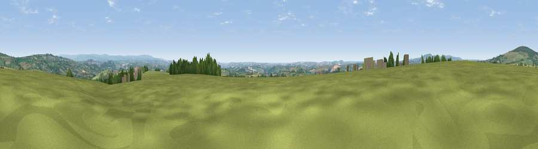

Viewpoint near St Mellion
#10197 in England · top 18% of its area beats it · near St Mellion · access?Where it is
The exact computed spot (SX 38275 67275). Click the marker for map links.
Public access: no public right of way or access land is recorded at this exact spot — it may be on private land. Computed from Natural England's CRoW access layer and OpenStreetMap rights of way — not the legal definitive map. Always verify locally.
The view, rendered

A 360° render of this exact spot computed from the terrain model, tree cover and land cover — summer colours, afternoon light, calibrated against photographs of famous viewpoints. Real trees, hedges and buildings will differ in detail.
The panorama
Grey silhouette: terrain skyline in each direction (720 bearings, Earth curvature and refraction included). Dashed green: skyline with trees (+15 m) and buildings (+8 m) as obstacles. Blue strip: how far the ground is visible on each bearing.
Where the view opens
Wedge length = distance to the farthest visible ground on that bearing (vegetation-aware). Rings at 10, 25 and 50 km.
What fills the view
70% grassland · 15% woodland · 12% cropland · 3% built-up ·
Angular shares of the visible panorama (visual magnitude), not map area. Landscape diversity 0.41 (0–1 Shannon).
Key numbers
More beautiful places nearby
The staircase of upgrades: each row has a higher view potential than everything closer. Driving times are estimates from straight-line distance, calibrated against real road routing — check an actual route before setting out.
| Place | Direction | Drive | Score |
|---|---|---|---|
| Viewpoint near St Mellion | SE · 3 km | ~8 min | 67.3 |
| Kernock Hill | SSW · 3 km | ~8 min | 68.6 |
| Kit Hill | NNW · 4 km | ~9 min | 80.3 |
| Viewpoint near Crafthole | SSW · 13 km | ~24 min | 80.5 |
| Viewpoint near Crafthole | SSW · 14 km | ~25 min | 81.0 |
| Viewpoint near Downderry | SSW · 14 km | ~25 min | 83.5 |
| Viewpoint near Polperro | SW · 25 km | ~41 min | 83.7 |
| Pencarrow Head | SW · 28 km | ~45 min | 86.0 |
50.48292, -4.28093 · source: screening · position refined by local search. Computed location — check access rights before visiting.